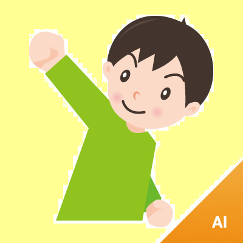

<template>
    <style>
        button {
            display: block;
        }
        /* shadowRootの下にあるから、tempalateの外にも影響をおよぼさない */
        img {
            width: 20%;
        }
    </style>
    
    <button>click</button>
</template>

<script>
    // import元のdocumentを取得する
    var thisDocument = document.currentScript.ownerDocument;

    // 独自エレメントを作る
    var YamadaPrototype = Object.create(HTMLElement.prototype);
    YamadaPrototype.createdCallback = function(){
        //独自エレメント生成時にtemplateの要素を追加する

        // templateタグからdomを取得
        var template = thisDocument.querySelector("template");
        // templateのクローンを生成(この時点では親ノードはnull)
        var clone = thisDocument.importNode(template.content, true);
        
        // 独自エレメントの下にshadowRootを作る
        var shadowRoot = this.createShadowRoot();
        // shadowRootにtemplateのクローンをappendする
        shadowRoot.appendChild(clone);

        // buttonにクリックイベントをつけてみる
        // shadowRootからボタンを取得
        var button = shadowRoot.querySelector("button");
        button.addEventListener('click', function(e){
            alert("hello");
        });
    };
    document.registerElement("yamada-element", {
        prototype: YamadaPrototype
    });
</script>
